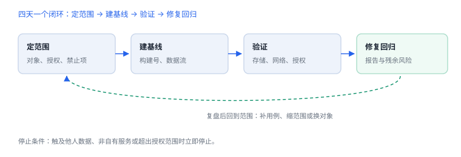

自建靶场的检测与评估
靶场不是随便找个 App，而是能覆盖四条链的最小工程
训练营的目标是走完一次完整闭环：定范围、建基线、验证、修复回归。靶场选得对，四天就能跑完；选错了，两周还在找入口。
1. 靶场要覆盖什么
| 链路 | 必须有 | 用来练什么 |
|---|---|---|
| 入口 | 登录页 + 一个列表页 | 调试时找到功能入口 |
| 鉴权 | 令牌、刷新、退出 | 401 与 403 的分流 |
| 网络 | 一个可拦截的请求 | 请求体、响应、错误码 |
| 存储 | 本地缓存 + 一份凭据 | 位置盘点与保护类 |
四条链齐全，才谈得上“完整分析”；只有登录页的靶场，练不到授权与存储。
2. 环境清单
| 项 | 要求 | 检查方式 |
|---|---|---|
| 工程 | 自己构建，Debug 可调试 | 能 attach 到进程 |
| 设备 | 模拟器或自有测试机 | `simctl list devices` 有 Booted |
| 测试服务 | 本机或内网，可返回 200/401/403 | `curl` 三个状态各一次 |
| 工具 | 命令行工具、调试器、抓包 | 逐条命令能跑通 |
3. 四天节奏
| 天 | 任务 | 产出 |
|---|---|---|
| 1 | 范围、数据流、基线 | 范围说明 + 基线记录 |
| 2 | 存储与日志检查 | 位置清单 + 证据 |
| 3 | 网络与授权验证 | 用例结果表 |
| 4 | 修复、回归、报告 | 回归报告 |

4. 第一天要留下的基线
建立基线
xcrun simctl list devices | grep Booted
xcrun simctl get_app_container booted com.example.app data
git rev-parse --short HEAD
curl -s -o /dev/null -w "%{http_code}\n" http://127.0.0.1:8080/records/1基线包含三样：构建号、容器路径、测试服务的可用状态。后面所有结论都要能对回这三样，否则无法复现。
5. 验收标准
| 标准 | 合格线 |
|---|---|
| 范围 | 写明对象、时间、允许动作与禁止项 |
| 证据 | 每条结论都有可复现的位置或命令 |
| 修复 | 至少一处改动落在权威端 |
| 回归 | 同环境复测通过，相邻失败路径覆盖 |
| 报告 | 他人仅凭报告即可复现 |
停止条件
触及真实用户数据、影响非自有服务、或超出授权范围时立即停止并上报；停止本身也是训练的一部分。
触及真实用户数据、影响非自有服务、或超出授权范围时立即停止并上报；停止本身也是训练的一部分。
6. 常见错误：靶场选型与节奏
| 错误 | 后果 | 改法 |
|---|---|---|
| 选了一个只有登录页的靶场 | 练不到授权与存储 | 补列表页与本地缓存 |
| 用线上接口做测试 | 影响真实数据 | 只连自建服务 |
| 没有基线就开始改 | 无法判断是否修好 | 先记构建号与容器路径 |
| 四天排满不留余量 | 第四天赶报告，结论失真 | 每天留半天写记录 |
靶场选型的唯一标准：能不能在四天内走完“入口 → 鉴权 → 网络 → 存储 → 错误处理”这条链。
7. 自测
- 为什么靶场必须包含“存储 + 凭据”这一链？
- 基线只记构建号够不够？还缺什么？
- 验收标准里“修复落在权威端”意味着什么？
- 训练中什么情况下应当立即停止？